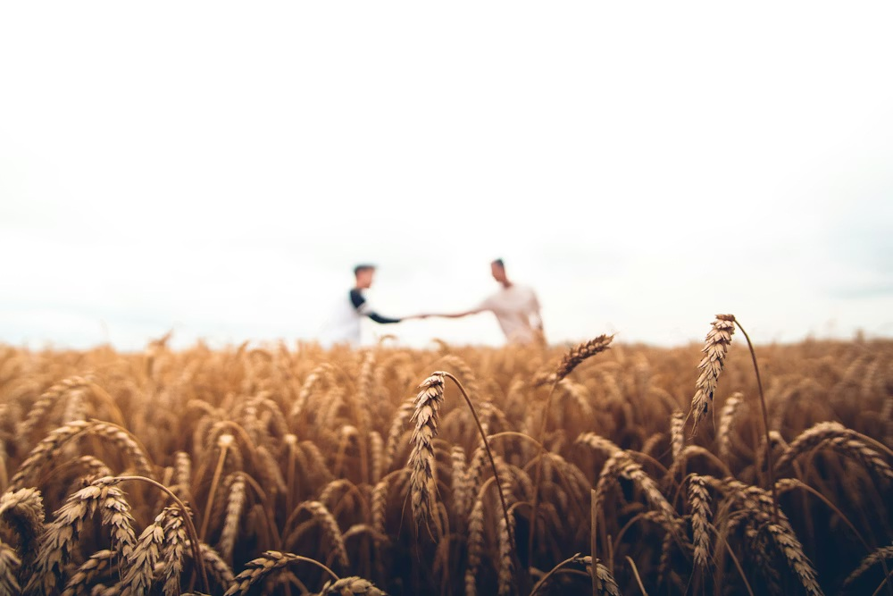

Livestock-Crop Integration
The "Golden Loop": Poultry and Vegetables working in perfect harmony.
1. Site Feasibility & Ratios
⚖️ Balance Ratio
50 Birds : 1 Acre.
To prevent nutrient burn from excess manure, keep approximately 50 free-range chickens per acre
of vegetable garden.
🥬 Crop Selection
Heavy Feeders.
Vegetables like Corn, Pumpkin, and Spinach love nitrogen-rich poultry manure. Root vegetables
(Carrots) generally need aged manure.
🐓 Breed Choice
Dual Purpose.
Select breeds like Rhode Island Red or Kuroiler. They are hardy foragers, good egg layers, and
provide meat.
2. Infrastructure: The "Chicken Tractor"
Instead of a stationary coop, use movable pens to bring the fertilizer directly to the soil.
🚧 Construction Specs
- Chicken Tractor: A floorless portable coop on wheels. Move it daily to a new patch of land.
- Perimeter Fencing: Essential to keep predators (dogs/foxes) out and chickens INSIDE the designated zone.
- Compost Zone: A designated area to mix excess manure with dry leaves (browns) to create stable fertilizer.
3. The Nutrient Cycle
Vegetable waste feeds the birds; Bird waste feeds the vegetables.
Weeds & Old Leaves
Eat Waste & Bugs
Rich Nitrogen Output
Grow Huge on Manure
4. Operational Calendar
Timing is critical. Chickens are "cleaners" before planting and "gleaners" after harvest.
Place Chicken Tractor on the garden bed 2 weeks before planting. They eat weed seeds, insect larvae, and fertilize the soil.
Remove Chickens. Plant your seeds/seedlings. Chickens will dig up seeds, so they must be fenced out during germination.
Allow supervised "duck/chicken patrol" between wide rows (like Corn) to eat bugs, but ensure they don't peck the fruits.
Release the flock into the field. They eat the leftover stalks, rotten fruit, and break the pest cycle for the next season.
5. Risks & Solutions
⚠️ RISK: "HOT" MANURE
Nitrogen Burn. Fresh poultry manure is too strong for young plants. Solution: Let manure age/compost for 3 months before applying directly to delicate crops.
| Problem | Solution |
|---|---|
| Seed Destruction | Chickens scratch soil. Keep them off beds until plants are 6 inches tall. |
| Food Safety (Salmonella) | Stop applying fresh manure 90 days before harvesting leafy greens. |
6. Economics
💰 Reduced Inputs
- Feed Cost: Reduced by 30% as birds forage for bugs and greens.
- Fertilizer: $0 cost. Manure provides N-P-K naturally.
📈 Stacked Income
- Vegetables: Primary income. Organic veggies sell for a premium.
- Eggs/Meat: Steady weekly income from the flock.